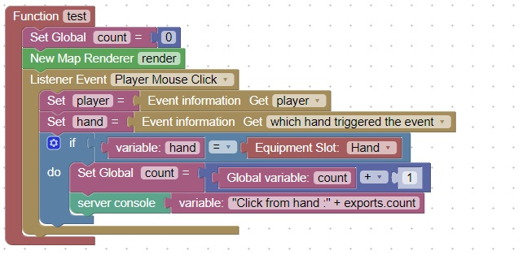

Console Output
This code will write to the server console when the player clicks their mouse

You can then see the message in the server console.
Note: In Minecraft when you left or right click the mouse, you get 2 events one from the main hand and one from the off-hand
To make sure that you don't count the click twice, add logic:
